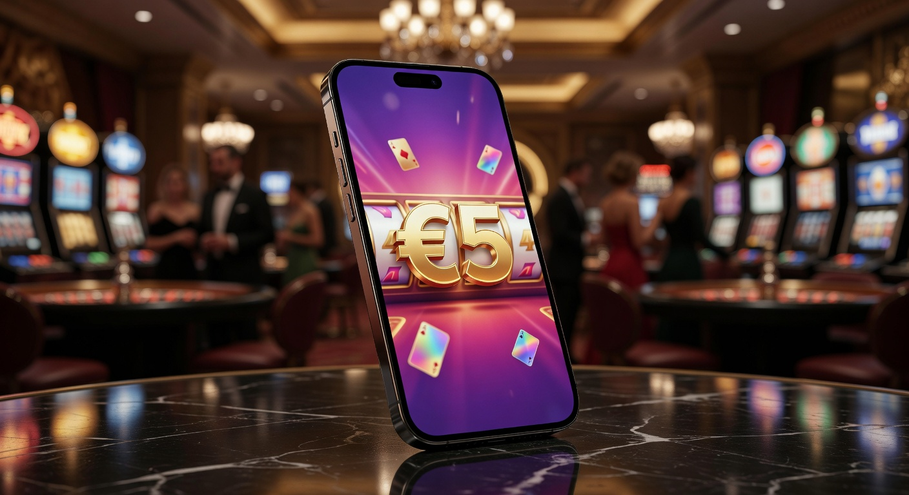
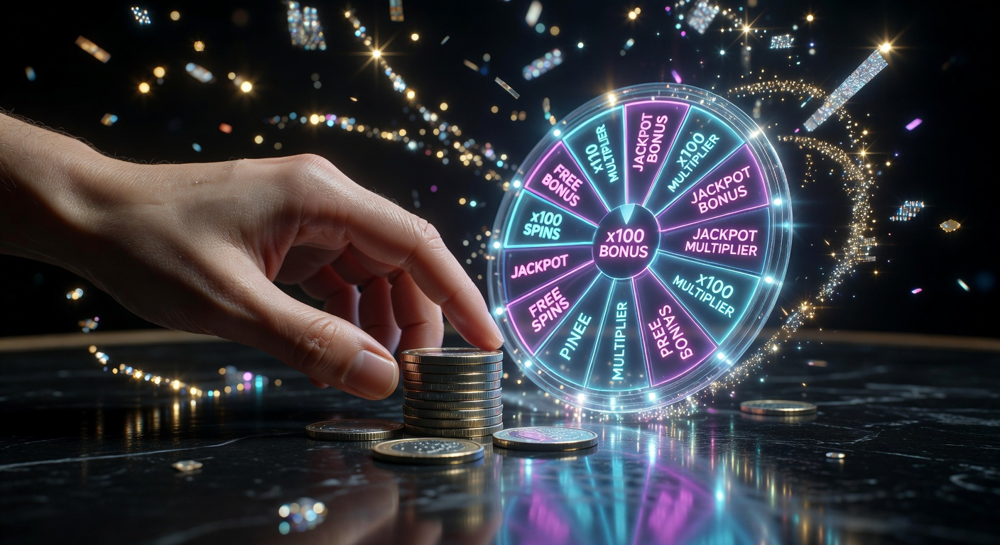
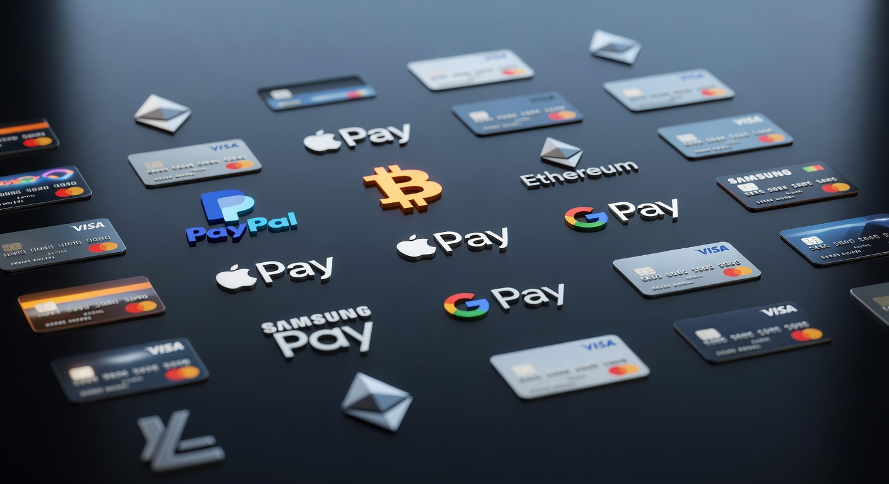
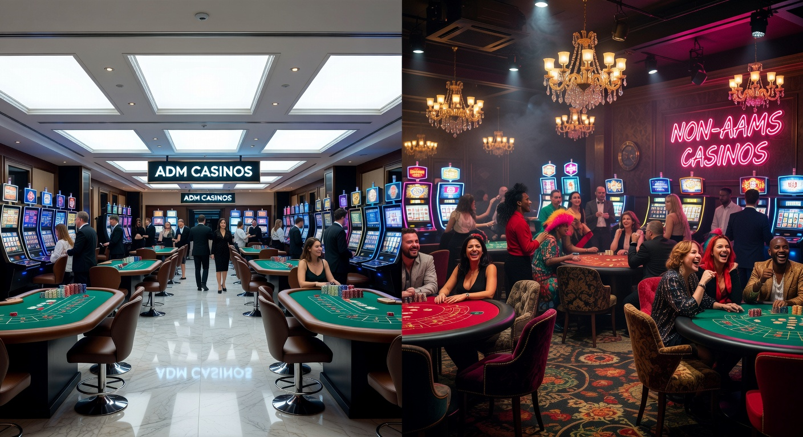
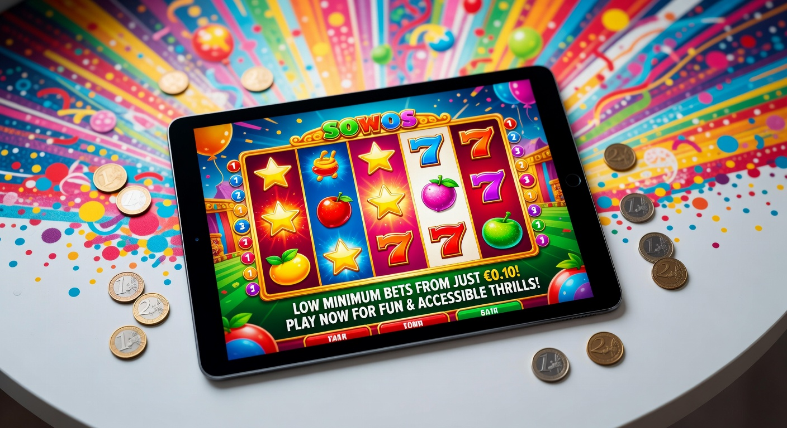

Casinò Non AAMS Deposito Minimo 5 Euro: La Guida Completa
Il panorama del gioco d'azzardo digitale in Italia ha subito una trasformazione radicale nel corso degli ultimi anni, culminando in un 2026 caratterizzato da una diversificazione senza precedenti. Per molti appassionati, la ricerca di un casinò non aams deposito minimo 5 euro rappresenta il punto di equilibrio ideale tra il desiderio di intrattenimento e la necessità di gestire il proprio budget in modo oculato. Queste piattaforme, operanti con licenze internazionali, offrono una flessibilità che spesso manca ai circuiti tradizionali, permettendo di testare il software e l'adrenalina delle scommesse con un investimento irrisorio.
Entrare nel mondo dei siti internazionali non significa solo accedere a cataloghi di giochi immensi, ma anche scoprire una nuova filosofia di gestione del rischio. Un casinò non aams deposito minimo 5 euro permette infatti di esplorare titoli di nicchia e varianti di gioco live senza dover impegnare cifre significative. In questa guida aggiornata a Marzo 2026, analizzeremo ogni aspetto tecnico, legale e promozionale di questi operatori, fornendo gli strumenti necessari per navigare in sicurezza in un mercato globale sempre più competitivo.
La crescita esponenziale di questi portali è dovuta anche alla crescente sfiducia verso i limiti stringenti imposti dalle normative locali. Molti giocatori cercano oggi un'esperienza più libera, dove la velocità delle transazioni e l'assenza di burocrazia eccessiva fanno la differenza. Optare per un casinò non aams deposito minimo 5 euro è diventata una strategia comune sia per i neofiti che per i giocatori esperti che desiderano diversificare i propri account di gioco.
Perché scegliere un operatore con ricarica minima ridotta?
La motivazione principale che spinge migliaia di utenti verso un casinò non aams deposito minimo 5 euro risiede nella democratizzazione del gioco. Non tutti i giocatori sono "high roller" disposti a versare centinaia di euro alla prima sessione. La possibilità di iniziare con soli 5 euro abbassa drasticamente la barriera all'ingresso, rendendo il casinò online un passatempo accessibile a chiunque desideri provare l'ebbrezza di una puntata senza stress finanziario.
Inoltre, queste piattaforme sono ideale per testare l'affidabilità del servizio clienti e la velocità dei prelievi. Prima di impegnare capitali più consistenti, un versamento di piccola entità funge da "stress test" per la piattaforma. Se un casinò non aams deposito minimo 5 euro gestisce con efficienza anche le micro-transazioni, è molto probabile che offra uno standard elevato anche per operazioni di calibro superiore. La gestione del portafoglio di gioco diventa così un esercizio di prudenza e strategia.
Un altro vantaggio non trascurabile riguarda l'accesso ai bonus. Molte persone credono erroneamente che con soli 5 euro non si possa attivare alcuna promozione. Al contrario, nel 2026, molti operatori esteri hanno strutturato offerte specifiche che includono giri gratis o piccoli moltiplicatori anche su versamenti minimi. Questo permette di estendere considerevolmente la durata della sessione di gioco iniziale, aumentando le probabilità di comprendere le dinamiche delle slot o dei tavoli verdi senza ulteriori esborsi.
I Migliori Casinò Non AAMS con Deposito da 5 Euro nel 2026

Il mercato attuale è saturo di opzioni, ma non tutte le piattaforme garantiscono lo stesso livello di eccellenza. Quando cerchiamo un casinò non aams deposito minimo 5 euro, dobbiamo guardare oltre la semplice cifra del versamento. È essenziale valutare la solidità della licenza, la varietà dei fornitori di software e la trasparenza dei termini e delle condizioni. Di seguito, presentiamo una selezione dei brand più performanti quest'anno.
| Brand | Deposito Minimo | Bonus Principale | Link Sicuro |
|---|---|---|---|
| Millioner | 5€ | 100% fino a 500€ + 200 giri gratis | Visita Millioner |
| Roulettino | 5€ | Bonus Benvenuto 150% | Visita Roulettino |
| Wyns | 5€ | Pacchetto di Benvenuto Multilivello | Visita Wyns |
| Kinbet | 5€ | Reload Bonus Settimanali | Visita Kinbet |
| Dragonia | 5€ | Cashback immediato sulle perdite | Visita Dragonia |
Piattaforme come Millioner si distinguono per un'interfaccia utente estremamente fluida, ottimizzata per chi gioca da mobile. Spesso, chi cerca un casinò non aams deposito minimo 5 euro lo fa da smartphone, e la rapidità di caricamento dei giochi diventa un fattore critico. D'altro canto, Roulettino offre una profondità di mercato incredibile per quanto riguarda i giochi da tavolo, permettendo puntate minime centesimali che si sposano perfettamente con una ricarica contenuta.
Non possiamo dimenticare Wyns e Kinbet, due colossi che hanno ridefinito il concetto di fedeltà nel 2026. Anche se iniziate con il minimo euro richiesto, questi siti offrono programmi VIP scalabili che premiano la costanza piuttosto che l'entità del singolo versamento. Infine, Dragonia rimane la scelta prediletta per chi ama le ambientazioni fantasy e le slot machine di ultima generazione, con un catalogo che supera i 7.000 titoli.
Classifica dei siti più affidabili per piccoli budget
Per stilare una classifica veritiera di ogni casinò non aams deposito minimo 5 euro, abbiamo analizzato i feedback degli utenti su forum internazionali e testato personalmente i tempi di risposta dell'assistenza. In cima alla lista troviamo operatori che non solo accettano depositi bassi, ma che non applicano commissioni nascoste su queste transazioni. È frustrante versare 5 euro e vedersene accreditati solo 4 a causa di costi di elaborazione; i brand da noi selezionati garantiscono l'intero ammontare sul conto di gioco.
In questo contesto, Wildtokyo Casinò e Lunubet Casinò hanno scalato le preferenze degli italiani nel 2026 grazie a politiche di trasparenza esemplari. Molti utenti apprezzano la possibilità di navigare in un ambiente ideale per chi vuole divertirsi senza la pressione di dover vincere grandi somme per coprire i costi di ingresso. La stabilità dei server e la protezione dei dati sono garantite da protocolli SSL di ultima generazione, gli stessi utilizzati dalle istituzioni bancarie globali.
Parametri di valutazione: Come testiamo le piattaforme
La nostra metodologia di analisi per ogni casinò non aams deposito minimo 5 euro è rigorosa. Il primo parametro è la validità della licenza. Anche se parliamo di siti non ADM, verifichiamo che possiedano autorizzazioni rilasciate da enti come la Curacao eGaming o la MGA (Malta Gaming Authority). Questi enti assicurano che il Generatore di Numeri Casuali (RNG) sia equo e non manomesso. La sicurezza dei fondi è la nostra priorità assoluta.
Un altro aspetto fondamentale è la varietà dei metodi di pagamento disponibili per il deposito minimo euro. Valutiamo positivamente i siti che integrano portafogli elettronici e criptovalute, poiché garantiscono anonimato e velocità. Infine, testiamo l'usabilità dell'applicazione mobile. Nel 2026, un casinò non aams deposito minimo 5 euro che non offra un'esperienza mobile impeccabile non può essere considerato competitivo. Verifichiamo la fluidità delle animazioni e la facilità di navigazione nei menu per assicurare un'esperienza piacevole a 360 gradi.
Bonus di Benvenuto e Promozioni con solo 5 Euro

Uno dei miti più comuni da sfatare è che le promozioni siano riservate solo a chi versa somme ingenti. Nel 2026, il mercato dei casinò non aams deposito minimo 5 euro è talmente agguerrito che gli operatori fanno a gara per attirare anche i micro-giocatori. Un bonus di benvenuto ben strutturato può raddoppiare o triplicare il capitale iniziale, offrendo una leva finanziaria notevole anche su un versamento di base. È comune trovare offerte "versa 5 e gioca con 15" o "100% fino a 500" euro che si attivano già dalla soglia minima.
Questi incentivi sono fondamentali per prolungare il tempo di gioco. Immaginate di depositare 5 euro e ricevere altri 5 euro di bonus più 50 giri gratis su una slot popolare come "Book of Dead". Improvvisamente, il vostro potenziale di esplorazione del sito aumenta esponenzialmente. Le promozioni fungono da biglietto da visita per il casinò, dimostrando la generosità dell'operatore verso la propria clientela. È però vitale leggere attentamente i requisiti di puntata, per non avere sorprese al momento del prelievo.
Giri gratis e bonus senza deposito aggiuntivi
Oltre al classico match bonus, il casinò non aams deposito minimo 5 euro moderno spesso include pacchetti di free spins. Questi giri gratis sono solitamente legati a titoli specifici, spesso le ultime novità dei provider più famosi come NetEnt o Pragmatic Play. In alcuni casi, registrandosi tramite link sicuri, è possibile ottenere anche un piccolo bonus senza deposito aggiuntivo, che permette di iniziare a giocare ancora prima di effettuare la ricarica da 5 euro.
Queste offerte sono particolarmente apprezzate dai cacciatori di bonus che cercano di costruire un bankroll partendo da zero o quasi. Siti come Astromania Casinò e Diva Spin Casinò sono noti per le loro campagne promozionali creative che coinvolgono missioni giornaliere e tornei tra giocatori, dove anche una puntata minima può portare alla vincita di ulteriori premi in denaro o bonus. La componente di gamification è diventata un pilastro fondamentale dell'esperienza di gioco nel 2026.
Requisiti di scommessa: cosa sapere prima di riscattare
Trasparenza significa anche parlare dei "wagering requirements". Ogni bonus ottenuto in un casinò non aams deposito minimo 5 euro è soggetto a regole precise. Se ricevete 5 euro di bonus con un requisito di 30x, significa che dovrete generare un volume di gioco pari a 150 euro prima di poter prelevare le vincite derivanti dal bonus. Per un giocatore che versa poco, è preferibile cercare bonus con requisiti bassi o "no-wagering spins", dove le vincite dei giri gratuiti sono immediatamente prelevabili.
Bisogna inoltre controllare la contribuzione dei diversi giochi al soddisfacimento dei requisiti. Solitamente, le slot machine contribuiscono al 100%, mentre i giochi da tavolo o il casinò live possono contribuire solo per il 5% o il 10%. Chi sceglie un casinò non aams deposito minimo 5 euro dovrebbe concentrarsi sulle slot ad alto RTP (Return to Player) per massimizzare le probabilità di convertire il bonus in denaro reale. Informarsi preventivamente è la chiave per un'esperienza di gioco soddisfacente e priva di intoppi burocratici.
Metodi di Pagamento Ideali per Micro-Transazioni

Gestire un deposito minimo euro di piccola entità richiede sistemi di pagamento efficienti che non erodano il capitale con commissioni fisse elevate. Nel 2026, la tecnologia blockchain e i nuovi gateway di pagamento istantaneo hanno risolto gran parte di questi problemi. Quando si sceglie un casinò non aams deposito minimo 5 euro, è fondamentale verificare che siano presenti opzioni come Revolut, Wise o i classici portafogli elettronici, che garantiscono transazioni immediate e gratuite.
La velocità è un altro fattore determinante. Nessun giocatore vuole aspettare ore o giorni per vedere accreditati 5 euro sul proprio conto. I migliori operatori internazionali processano queste ricariche in tempo reale, permettendo di passare dal login alla prima puntata in meno di sessanta secondi. Questa agilità è ciò che rende il casinò non aams deposito minimo 5 euro così attraente rispetto alle procedure spesso più farraginose dei siti locali che richiedono verifiche documentali estese prima ancora del primo versamento.
Criptovalute: Bitcoin e Ethereum per depositi minimi
L'integrazione delle monete digitali ha rivoluzionato il settore. Utilizzare Bitcoin, Ethereum o stablecoin come USDT per ricaricare un casinò non aams deposito minimo 5 euro offre vantaggi impareggiabili in termini di privacy e sicurezza. Le transazioni cripto sono irreversibili e non richiedono la condivisione di dati bancari sensibili con la piattaforma di gioco. Molti siti nel 2026 offrono persino bonus esclusivi per chi decide di utilizzare le criptovalute come metodo principale.
Inoltre, l'uso di "Layer 2" o reti veloci come Lightning Network per Bitcoin permette di inviare micro-somme con costi di transazione (gas fees) quasi nulli. Questo rende il deposito minimo euro tramite cripto estremamente conveniente. Piattaforme come Spinempire Casinò sono diventate leader di mercato proprio grazie alla loro infrastruttura "crypto-first", attirando una nuova generazione di giocatori tecnicamente preparati che cercano autonomia e velocità nel gestire i propri fondi di gioco.
Portafogli Elettronici e Voucher prepagati
Per chi preferisce metodi più tradizionali, gli e-wallets rimangono una garanzia. Servizi come Skrill e Neteller sono lo standard industriale per ogni casinò non aams deposito minimo 5 euro. Permettono di separare le spese dedicate al gioco dal conto corrente principale, offrendo un ulteriore livello di controllo del budget. Anche i voucher prepagati come Paysafecard o Neosurf sono molto popolari, poiché consentono di ricaricare il conto in contanti acquistando un codice presso i rivenditori fisici, mantenendo il massimo anonimato.
È importante notare che alcuni casinò non aams deposito minimo 5 euro potrebbero escludere Skrill o Neteller dall'attivazione del bonus di benvenuto. Questo accade per prevenire abusi promozionali. Se il vostro obiettivo è riscattare l'offerta iniziale, assicuratevi di leggere le clausole sui metodi di pagamento accettati. In generale, le carte di credito/debito dei circuiti Visa e Mastercard sono universalmente accettate e quasi sempre compatibili con ogni tipo di promozione di gioco disponibile sulla piattaforma.
Casinò Non AAMS vs ADM: Differenze Principali

La distinzione tra un sito con licenza italiana (ADM/AAMS) e un casinò non aams deposito minimo 5 euro risiede principalmente nella flessibilità operativa e normativa. Mentre i siti ADM sono obbligati a seguire protocolli molto rigidi imposti dall'Agenzia delle Dogane e dei Monopoli, i siti internazionali operano sotto giurisdizioni che permettono una maggiore libertà creativa e commerciale. Questo si traduce in palinsesti più ampi, bonus più generosi e, appunto, soglie di deposito più basse e accessibili.
Un'altra differenza sostanziale riguarda il processo di registrazione. Nei siti italiani, l'uso dello SPID o l'invio immediato dei documenti è obbligatorio per attivare il conto. In molti siti internazionali, è possibile iniziare a giocare immediatamente, rimandando la procedura KYC (Know Your Customer) al momento del primo prelievo consistente. Questo permette un approccio più rilassato al gioco d'azzardo, specialmente per chi desidera solo fare qualche puntata occasionale senza "scartoffie" iniziali.
Per chi cerca maggiori informazioni su questa categoria di siti, è utile consultare risorse esterne autorevoli. Ad esempio, è possibile scoprire di più sulla storia dei casinò online su Wikipedia, oppure consultare i report di Forbes sulle tendenze del mercato del gaming globale. Queste letture aiutano a comprendere come il settore si stia evolvendo verso una maggiore globalizzazione e come il casinò non aams deposito minimo 5 euro si inserisca in questo trend di crescita costante.
Limiti di deposito e flessibilità del palinsesto
I siti ADM impongono spesso limiti di deposito minimi più alti, solitamente fissati a 10 o 20 euro. Un casinò non aams deposito minimo 5 euro rompe questo schema, permettendo una gestione del rischio più granulare. Se volete approfondire questa opzione, potreste essere interessati a confrontarla con le piattaforme che offrono un casinò non aams deposito 10 euro, per vedere quale soglia si adatta meglio alle vostre abitudini di spesa. La flessibilità è il vero valore aggiunto degli operatori internazionali nel 2026.
Oltre ai limiti finanziari, c'è la questione del software. I siti non AAMS collaborano con una gamma più vasta di sviluppatori. Potrete trovare titoli di studi indipendenti che non sono presenti sul mercato italiano a causa degli alti costi di certificazione locale. Questo significa che un casinò non aams deposito minimo 5 euro offre spesso un'esperienza di intrattenimento più varia e innovativa, con meccaniche di gioco sperimentali e grafiche all'avanguardia che mantengono alto l'interesse del giocatore nel tempo.
La questione della licenza internazionale (Curacao, MGA)
Molti si chiedono se un casinò non aams deposito minimo 5 euro sia sicuro. La risposta risiede nella qualità della sua licenza internazionale. La licenza di Curacao, ad esempio, è una delle più antiche e rispettate al mondo. Permette agli operatori di accettare criptovalute, cosa che la licenza MGA di Malta limita maggiormente. Entrambe, tuttavia, impongono standard rigorosi sulla protezione dei fondi dei giocatori e sull'equità dei giochi. Non bisogna confondere "non AAMS" con "non protetto".
Gli operatori seri che operano a livello globale ci tengono alla loro reputazione. Un casinò non aams deposito minimo 5 euro che non paga le vincite o che ha software truccati verrebbe rapidamente segnalato e messo al bando dalle comunità di giocatori. Per una maggiore sicurezza, potete sempre verificare lo status della licenza cliccando sul logo dell'autorità garante (solitamente posto a fondo pagina del sito). È inoltre utile consultare il sito della UK Gambling Commission per comprendere quali siano gli standard di protezione più elevati a livello europeo e mondiale.
Quali giochi provare con un budget di 5 Euro?

Con una ricarica contenuta, la scelta del gioco è fondamentale per massimizzare il divertimento. Un casinò non aams deposito minimo 5 euro offre migliaia di opzioni, ma non tutte sono adatte a un budget ridotto. Se puntate 1 euro a giro, la vostra sessione potrebbe finire in cinque minuti. La strategia corretta consiste nel cercare giochi che permettano puntate minime molto basse, nell'ordine di 0,01€ o 0,10€, per garantirvi centinaia di giocate potenziali.
Le slot machine sono ovviamente la scelta più popolare, ma anche il casinò live ha fatto passi da gigante. Nel 2026, molti tavoli di roulette e blackjack in diretta permettono puntate a partire da 10 o 20 centesimi. Questo significa che con un casinò non aams deposito minimo 5 euro potete vivere l'emozione di un vero casinò con croupier dal vivo, interagendo in chat con altri giocatori, senza dover spendere una fortuna. È l'essenza del gioco come puro intrattenimento sociale e ludico.
Slot machine a bassa volatilità
Per chi gioca con il minimo euro richiesto, le slot a bassa volatilità sono le migliori alleate. Questi giochi pagano vincite più frequenti, anche se di importo minore, aiutando a mantenere stabile il saldo del conto. Titoli classici come "Starburst" o le moderne slot a tema frutta sono ideale per questo scopo. In un casinò non aams deposito minimo 5 euro, queste slot permettono di godersi le animazioni e le funzioni bonus senza vedere il proprio credito azzerarsi rapidamente.
Controllate sempre l'RTP del titolo scelto. Una slot con un RTP del 97% o superiore vi darà statisticamente più possibilità di prolungare la sessione rispetto a una con l'88%. Molti casinò non aams deposito minimo 5 euro permettono di filtrare i giochi proprio in base alla volatilità e al fornitore, facilitando il compito di trovare il titolo perfetto per la propria strategia di gestione del bankroll. La conoscenza del software è la prima arma di difesa del giocatore consapevole.
Tavoli Live con puntate minime centesimali
Il casinò live è spesso visto come un ambiente per giocatori facoltosi, ma la realtà del 2026 è diversa. Entrando in un casinò non aams deposito minimo 5 euro, scoprirete i "Game Shows" come Crazy Time o Monopoly Live, dove è possibile scommettere pochissimi centesimi su diverse opzioni. Questi giochi sono spettacolari, gestiti da presentatori professionisti, e offrono un coinvolgimento che le slot tradizionali non possono replicare. Con 5 euro, potete partecipare a decine di round di gioco live.
Anche le varianti "Auto-Roulette" sono perfette per chi deposita il minimo. Senza il croupier fisico a gestire il tempo, le puntate minime scendono drasticamente, rendendo il casinò non aams deposito minimo 5 euro una sala giochi virtuale alla portata di tutti. La qualità dello streaming in 4K e la possibilità di giocare da tablet o smartphone rendono queste sessioni estremamente immersive, indipendentemente dall'entità della scommessa effettuata sul tavolo verde.
Vantaggi e Svantaggi delle ricariche da 5€
Analizzare obiettivamente un casinò non aams deposito minimo 5 euro significa soppesare i pro e i contro. Tra i vantaggi, oltre all'accessibilità, troviamo la possibilità di limitare drasticamente le perdite potenziali. È un metodo eccellente per praticare il gioco responsabile: una volta esauriti i 5 euro, si può decidere di fermarsi senza aver compromesso il budget mensile. Inoltre, è il modo più economico per scoprire nuove piattaforme e le loro funzionalità esclusive.
D'altro canto, ci sono degli svantaggi. Alcuni bonus di grandi dimensioni richiedono un deposito minimo superiore (ad esempio 20 euro) per essere attivati. Inoltre, con solo 5 euro, è difficile puntare a jackpot progressivi milionari che spesso richiedono scommesse più alte per essere qualificanti. Tuttavia, per la stragrande maggioranza degli utenti, i benefici di un casinò non aams deposito minimo 5 euro superano di gran lunga le limitazioni, specialmente se l'obiettivo principale è il puro divertimento senza rischi eccessivi.
- Vantaggio: Basso rischio finanziario e controllo totale della spesa.
- Vantaggio: Accesso rapido a migliaia di giochi internazionali senza burocrazia.
- Vantaggio: Possibilità di testare i tempi di prelievo con un investimento minimo.
- Svantaggio: Alcune promozioni premium potrebbero non attivarsi con soli 5€.
- Svantaggio: Sessioni di gioco potenzialmente brevi se non si scelgono titoli a bassa volatilità.
Sicurezza e Gioco Responsabile all'estero
La sicurezza non è un optional quando si parla di soldi, anche se si tratta di soli 5 euro. Ogni casinò non aams deposito minimo 5 euro che raccomandiamo deve implementare strumenti di autotutela per il giocatore. Questo include la possibilità di impostare limiti di deposito giornalieri, settimanali o mensili, e l'opzione di autoesclusione temporanea o permanente. Anche senza i vincoli ADM, i migliori operatori internazionali promuovono attivamente il gioco responsabile.
È essenziale ricordare che il gioco deve rimanere un piacere. Se sentite il bisogno di versare più di quanto potete permettervi, è il momento di fare una pausa. I casinò non aams deposito minimo 5 euro offrono spesso link a organizzazioni internazionali di supporto come GamCare o Gambling Therapy. Essere un giocatore consapevole nel 2026 significa anche saper sfruttare la tecnologia per proteggere se stessi, utilizzando i filtri di sicurezza e mantenendo un atteggiamento critico e razionale verso le scommesse online.
Inoltre, la sicurezza tecnica è garantita dalla crittografia dei dati. Quando inserite i vostri dati in un casinò non aams deposito minimo 5 euro, assicuratevi che l'URL inizi con "https" e che sia presente il simbolo del lucchetto nel browser. Questo assicura che le vostre informazioni personali e finanziarie siano protette da tentativi di intercettazione da parte di terzi. La reputazione di piattaforme come Boomerangbet Casino e VegasHero Casinò è costruita su anni di affidabilità e protezione costante della propria base utenti.
Slot con deposito 5€
Le slot machine rappresentano il cuore pulsante di ogni casinò non aams deposito minimo 5 euro. Nel 2026, la varietà tecnologica ha raggiunto vette incredibili, con meccaniche come Megaways, Cluster Pays e Bonus Buys che rendono ogni spin un'esperienza unica. Cercare "slot con deposito 5€" significa puntare su giochi che non solo accettano micro-scommesse, ma che offrono anche un alto potenziale di intrattenimento visivo e sonoro.
Molti fornitori di software, consapevoli della popolarità dei depositi bassi, hanno ottimizzato i loro titoli per permettere configurazioni di puntata estremamente flessibili. In un casinò non aams deposito minimo 5 euro, potete trovare slot dove selezionare il numero di linee di pagamento attive, permettendovi di giocare anche solo con 1 centesimo per giro. Questo è il modo migliore per esplorare la narrativa di una slot, sbloccare i suoi minigiochi interni e godersi l'esperienza completa senza prosciugare il conto in pochi istanti.
Un esempio di innovazione è il sistema Bonus Crab, introdotto da alcuni gruppi di casinò internazionali. Questo permette ai giocatori di partecipare a una sorta di "pesca miracolosa" virtuale ogni volta che effettuano un deposito, anche minimo. Con un casinò non aams deposito minimo 5 euro, potreste ricevere un gettone per il Bonus Crab e vincere ulteriori premi, giri gratis o bonus in denaro reale, aggiungendo un ulteriore strato di divertimento e valore al vostro versamento iniziale.
Giocare senza scartoffie
Una delle barriere più fastidiose per i giocatori moderni è l'eccessiva burocrazia. La possibilità di giocare senza scartoffie è uno dei motivi per cui il casinò non aams deposito minimo 5 euro ha così tanto successo. Mentre i siti con licenza italiana richiedono la verifica dell'identità immediata, spesso tramite procedure lunghe o l'invio di selfie con documenti, molti operatori internazionali permettono di registrarsi con una semplice email e iniziare a giocare in pochi secondi.
Questo approccio "frictionless" non significa che la sicurezza sia trascurata, ma che la fiducia è reciproca. Potete depositare i vostri 5 euro, provare i giochi e, solo quando decidete di ritirare le vostre vincite, completare il profilo. Per chi cerca la massima privacy, esistono anche opzioni di casino senza documenti, dove l'uso delle criptovalute elimina quasi totalmente la necessità di condividere dati personali sensibili. È la frontiera del gioco libero e moderno del 2026.
Questa libertà è particolarmente apprezzata da chi viaggia spesso o da chi non vuole che la propria attività ludica sia tracciata in modo invasivo dai sistemi bancari tradizionali. Il casinò non aams deposito minimo 5 euro si adatta allo stile di vita digitale contemporaneo, dove la velocità e la discrezione sono valori fondamentali. Naturalmente, l'operatore si riserva il diritto di richiedere verifiche in caso di transazioni sospette, garantendo così la conformità alle leggi internazionali contro il riciclaggio di denaro.
I migliori casino senza documenti a Marzo 2026
Con l'arrivo della primavera del 2026, abbiamo assistito al lancio di diverse piattaforme innovative che hanno alzato ulteriormente l'asticella. Se state cercando i migliori siti per giocare senza documenti questo mese, la scelta deve ricadere su brand che hanno dimostrato una solidità impeccabile. Un casinò non aams deposito minimo 5 euro di nuova generazione offre non solo anonimato, ma anche un supporto clienti multilingue disponibile 24/7 tramite chat dal vivo.
Tra i nomi caldi di Marzo 2026 troviamo siti che integrano intelligenza artificiale per personalizzare l'offerta di gioco. Immaginate un casinò non aams deposito minimo 5 euro che, in base alle vostre preferenze, vi suggerisce le slot che hanno pagato di più nelle ultime ore o che vi regala bonus su misura per il vostro gioco preferito. Questa personalizzazione estrema è ciò che distingue i leader di mercato dai semplici imitatori. La tecnologia è al servizio del giocatore per rendere l'esperienza fluida e gratificante.
Non dimentichiamo l'importanza dei tempi di prelievo. I migliori siti di questo mese garantiscono pagamenti "istantanei" per le criptovalute e in meno di 24 ore per gli e-wallets. Versare in un casinò non aams deposito minimo 5 euro e poter ritirare 50 o 100 euro di vincita in pochi minuti è il traguardo massimo dell'efficienza operativa. Brand come Millioner e Dragonia continuano a dominare le classifiche di gradimento proprio per la loro puntualità nei pagamenti, elemento che genera una fiducia incrollabile nella community.
Conclusioni
Il viaggio nel mondo del casinò non aams deposito minimo 5 euro ci ha mostrato come il gioco online nel 2026 sia diventato un ecosistema vasto, sicuro e incredibilmente accessibile. Queste piattaforme rappresentano l'opzione ideale per chi cerca un'esperienza di intrattenimento di alta qualità senza dover impegnare capitali significativi. La combinazione di depositi bassi, bonus generosi e una burocrazia ridotta ai minimi termini ha creato un ambiente ideale per ogni tipologia di utente.
Sia che siate attratti dalle ultime slot machine tecnologiche, sia che preferiate l'atmosfera dei tavoli live, un casinò non aams deposito minimo 5 euro ha qualcosa da offrirvi. L'importante è scegliere sempre operatori con licenze internazionali valide, leggere i termini delle promozioni e mantenere un approccio responsabile al gioco. Il divertimento deve essere la bussola che guida ogni vostra puntata, e con soli 5 euro, la rotta verso il piacere ludico è aperta a tutti.
In definitiva, la flessibilità dei siti internazionali ha costretto l'intero settore a evolversi, portando benefici diretti ai consumatori. Il 2026 è l'anno della consapevolezza e della scelta: poter decidere dove, come e quanto giocare è un diritto del giocatore moderno. Un casinò non aams deposito minimo 5 euro è lo strumento perfetto per esercitare questa libertà in sicurezza, scoprendo ogni giorno nuove forme di intrattenimento digitale in un mercato globale che non dorme mai.
Domande Frequenti (FAQ)
È legale giocare in un casinò non aams deposito minimo 5 euro?
Sì, è legale per i cittadini italiani accedere a siti internazionali. Questi operatori possiedono licenze regolari rilasciate da autorità estere che garantiscono l'equità del gioco. L'importante è scegliere piattaforme affidabili e dichiarare eventuali vincite secondo le normative fiscali vigenti nel 2026.
Posso davvero ottenere un bonus con soli 5 euro?
Assolutamente sì. Molti casinò non aams deposito minimo 5 euro offrono bonus di benvenuto, giri gratis e accesso a tornei speciali anche a chi effettua la ricarica minima. Verificate sempre i termini e le condizioni della singola offerta per assicurarvi che la soglia dei 5 euro sia sufficiente per l'attivazione.
Quali sono i metodi di pagamento più veloci per depositare 5 euro?
Le criptovalute (Bitcoin, USDT) e i portafogli elettronici come Skrill o Neteller sono i metodi più rapidi. Garantiscono l'accredito immediato del deposito minimo euro sul vostro conto di gioco, permettendovi di iniziare a scommettere istantaneamente senza attendere tempi bancari tecnici.
I giochi sono sicuri e non truccati?
I siti che operano con licenza di Curacao o MGA utilizzano software certificati da laboratori indipendenti come eCOGRA o iTech Labs. Questi enti verificano che il Generatore di Numeri Casuali (RNG) sia assolutamente imparziale, garantendo che ogni spin o mano di carte sia frutto del caso e non manipolabile dal casinò non aams deposito minimo 5 euro.
Cosa succede se vinco una grande somma con un piccolo deposito?
Le vincite vengono accreditate sul vostro saldo e possono essere prelevate secondo i termini del sito. Non c'è alcuna differenza nel trattamento di una vincita derivante da un deposito di 5 euro rispetto a una derivante da 500 euro. L'unica cosa da considerare sono i limiti massimi di prelievo giornalieri o mensili imposti dalla piattaforma.

Appassionato di turismo alpino e attività outdoor. Guida escursionistica certificata con esperienza decennale sulle Alpi italiane.